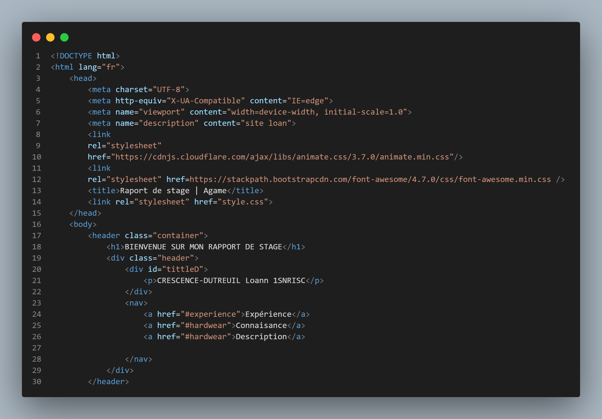

local 9003 Résidence Messidor 97420,
49 Bd de Verdun, Le Port 97420,
La Réunion
Contact : 0262 18 98 98
Expérience dévlopper durant le stage
- Dianostiquer une panne d'ordinateur
- Démontage et remontage d'ordinateur
- Comprendre la fonctionalité d'un serveur web
- Apprendre les composantes qui fait fonctionné un serveur
- Démontage et remontage d'un serveur
- Programmation et codage de site web avec HTML et CSS
Les missions effectuer lors de mon PFMP
Après avoir reconditionner les pc puis les mettres à jour,ensuite les ranger dans le stockage dédier a cette effet ,j’ai également eu des session de Programmation avec le webmaster ou j’ai revu le codage du HTML et du CSS et les outils de programmation Visual studio code
CONNAISANCE DEVELOPPER
- J’ai appris les différents composant que compose un serveur web et revue quelque notion vue dans le lycée :
- Deux processeurs et leur nom est xéon
- Barrets mémoire spécifique pour les serveur conçu pour rester allumé pendant 24/24
- Un système de ventilation important pour empêcher le surchauffage et le crash du serveur
- Deux boîtier d’alimentation et un boîtier de secours en cas de dysfonctionnement
- Le reconditionnement des ordinateurs défectueux
- Diagnostiquer les pannes
- Remplacement des composants
- Remontage des ordinateurs
- Test du logiciel windows 10/11
- Mettre a jour le windows
- La programmation avec le webmaster de l'association qui m’attirais
l’attention sur les sites d'apprentissage en ligne de la
programmation tel que
- Le W3SCHOOL ainsi que le github pour
- Versionner et mettre mes codes dans le cloud